Vive la carrera entera de un quarterback, del college al Salón de la Fama. Aquí no se simula tu ataque: cada down lo juegas tú.
iPhone · En español y en inglés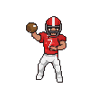
Jala la resortera y suelta. El bolsillo se cierra de verdad, el viento empuja el balón y el sack es físico: si el rusher te toca, se acabó.
Llegas como uno más. Juega bien y el coach confía en ti; cuando mandas, el draft, los fichajes y los traspasos son tuyos.
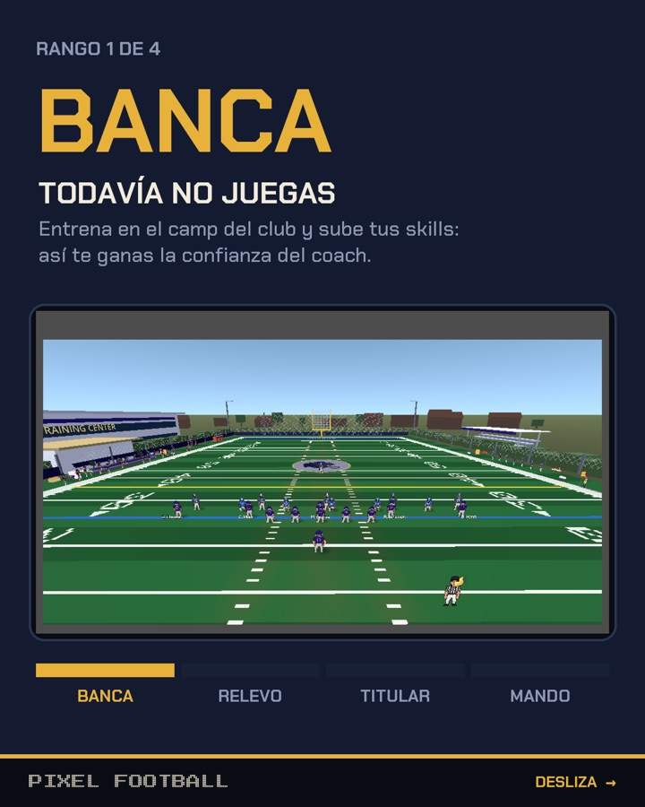
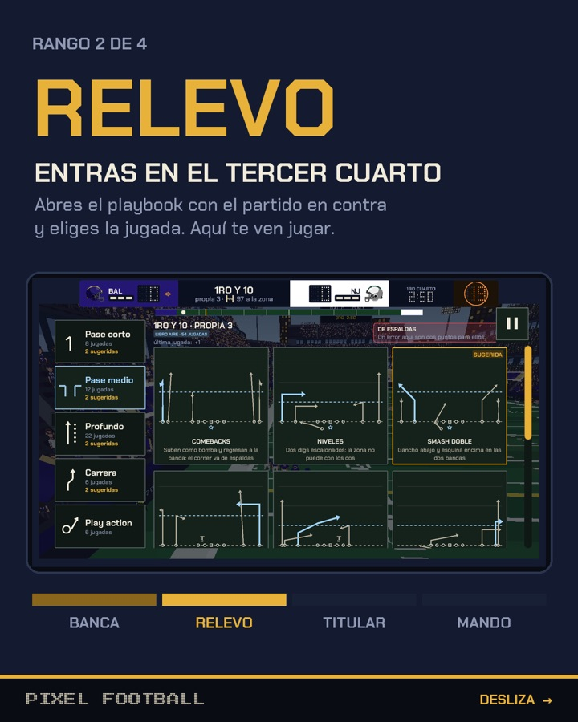
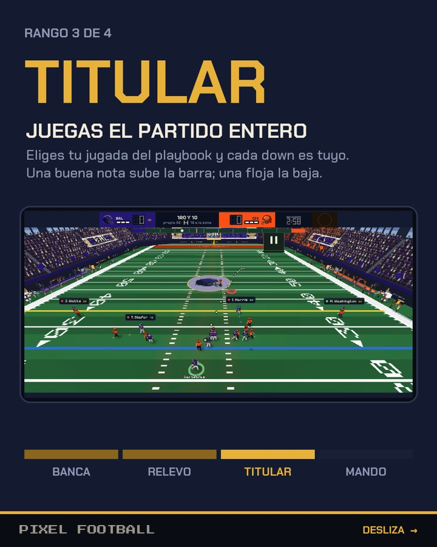
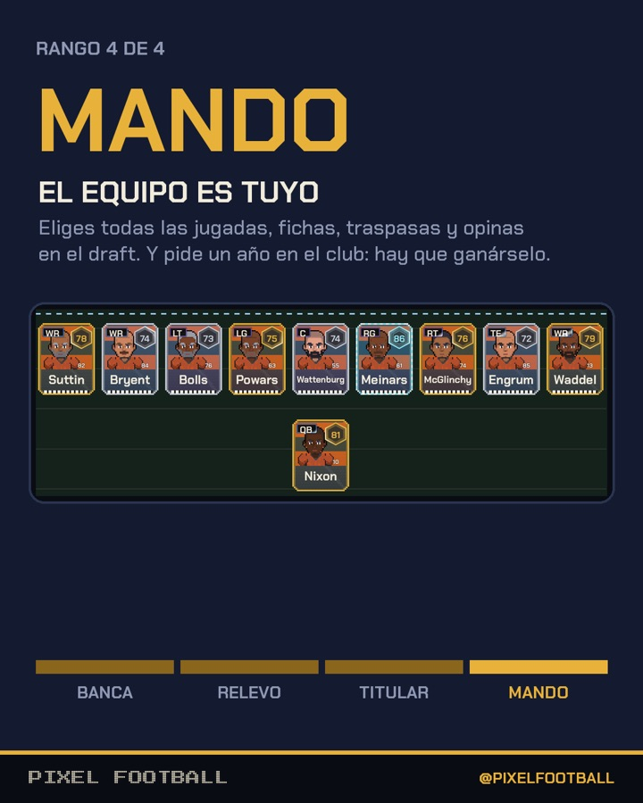
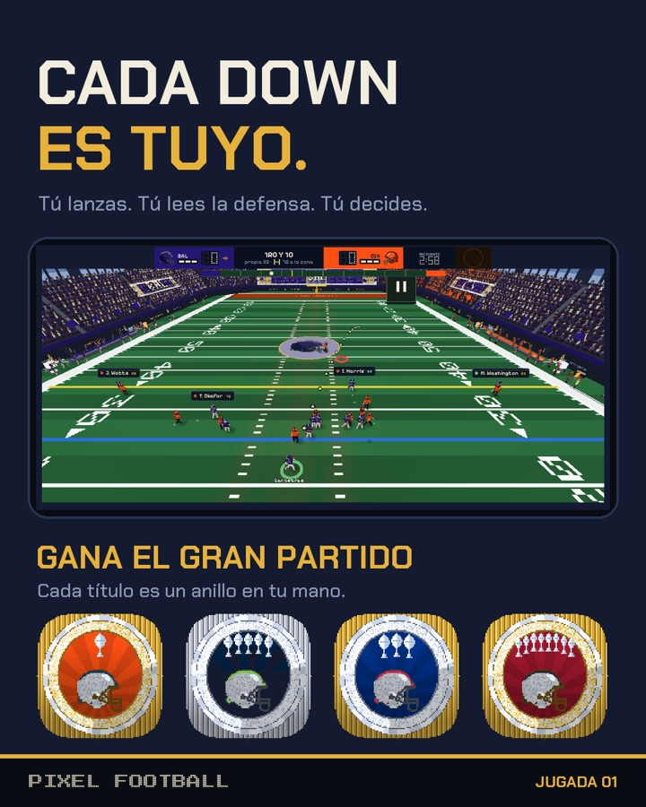
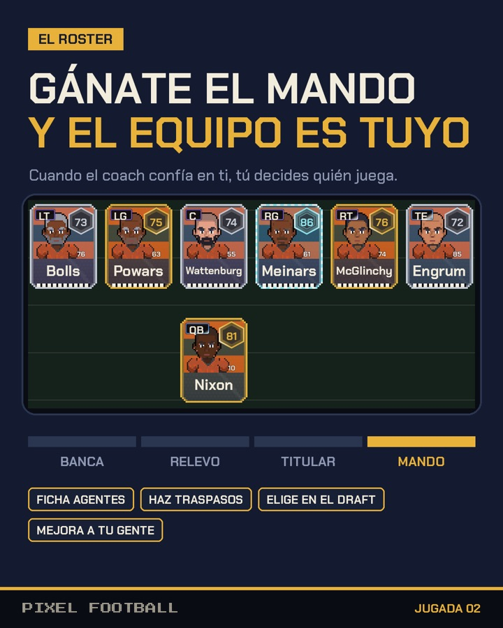
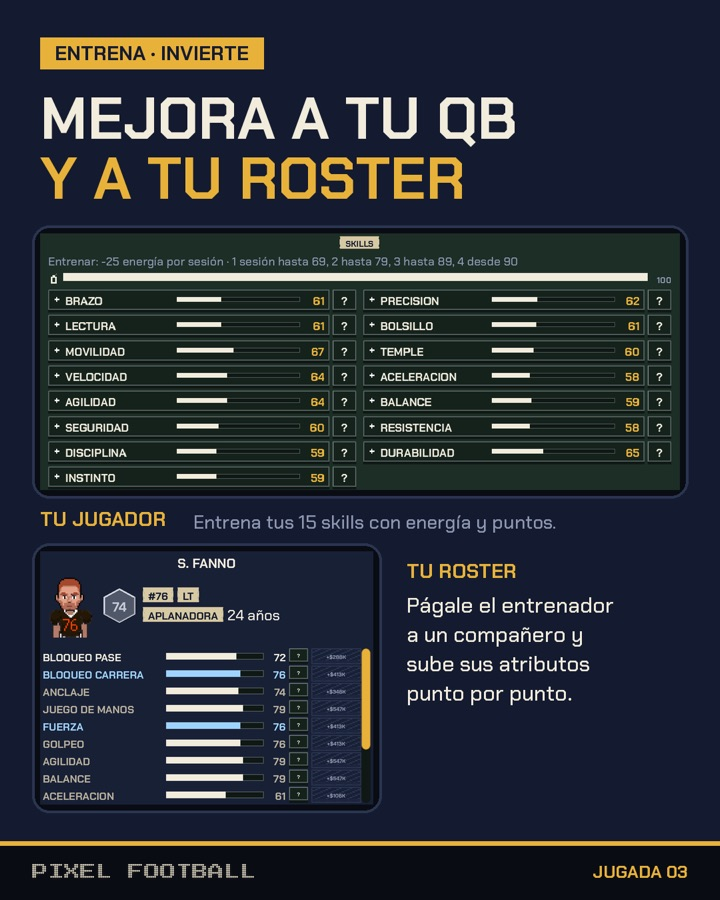
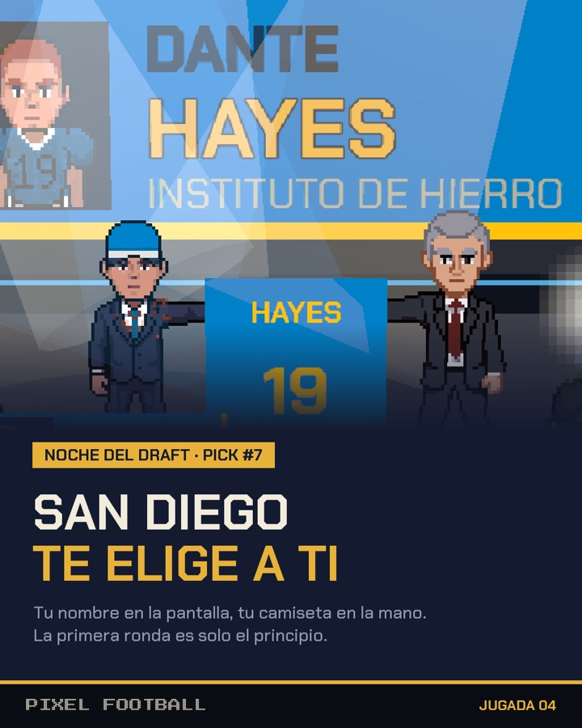
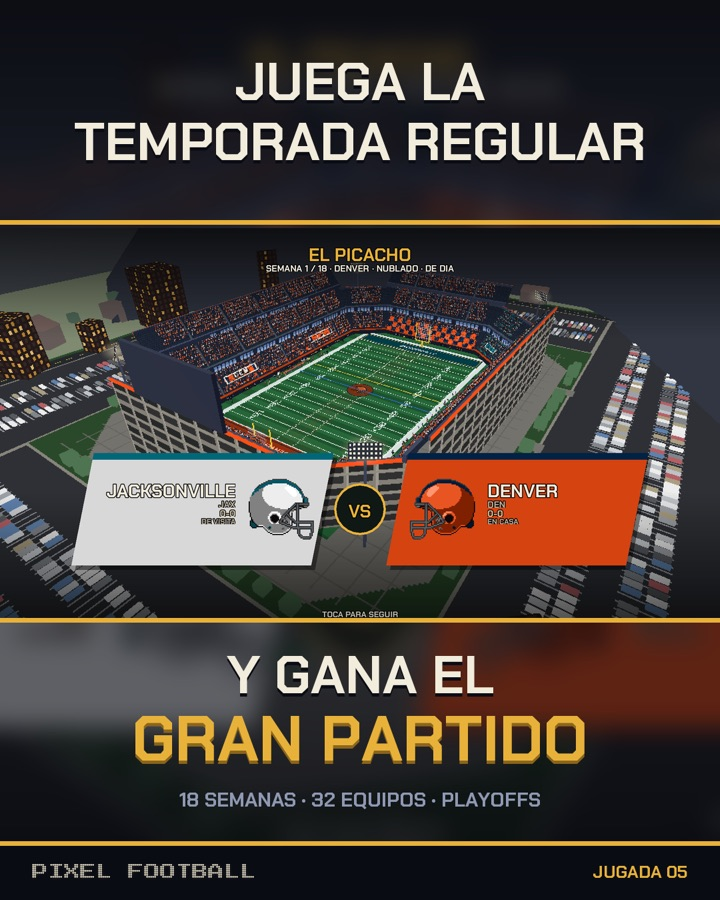
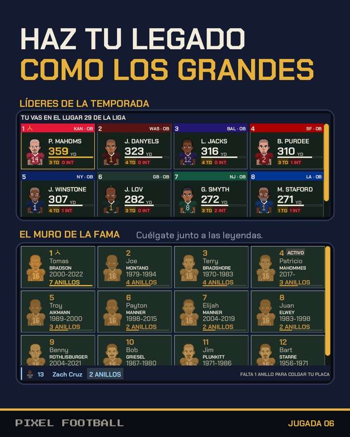
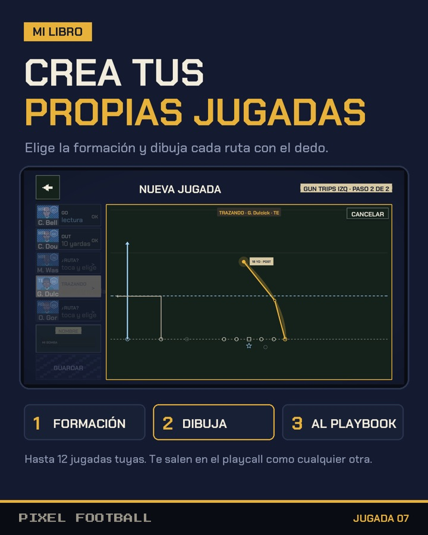
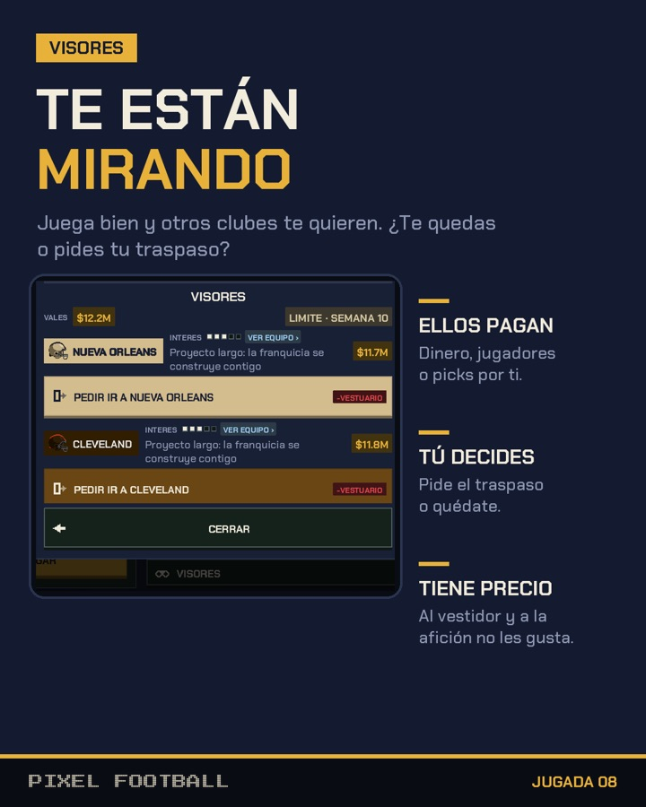
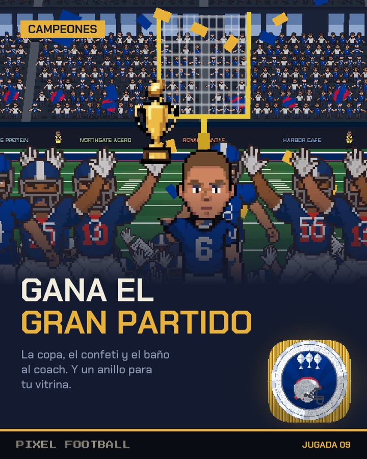
Cada club con su estadio, su caja, su nómina y sus 53 jugadores medidos en la cancha.
Temporada con descanso, la carrera por los playoffs y El Gran Partido.
Más agentes libres, traspasos, waivers y un mercado que se mueve aunque no mires.
Dibuja tus rutas con el dedo y llámalas en el partido como cualquier otra jugada.
En Game Center, del primer touchdown al dorsal retirado.
Sin cuenta, sin anuncios y sin rastreo. La partida vive en tu teléfono.